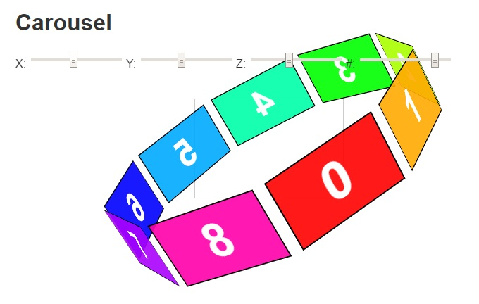
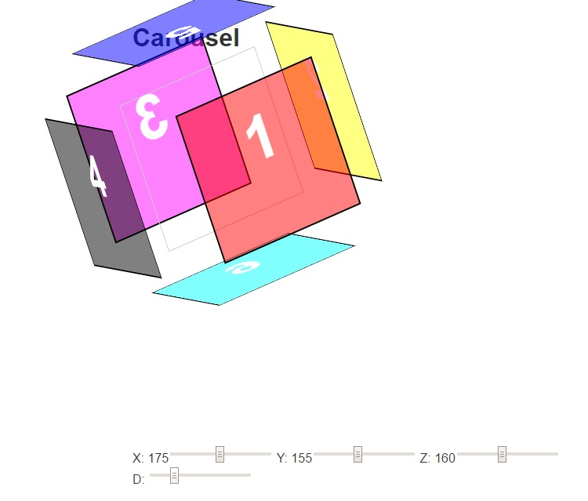
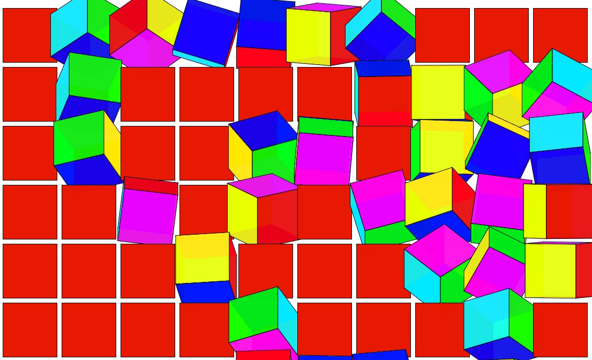
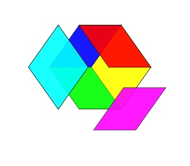

Expands on Experiment 1 by allowing the user to rotate the carousel on X, Y and Z axis as well as change the number of containers in the carousel.
Experiment 3

Transforms the idea of a carousel into a cube. Practice using the rotation on each axis. Translate each of the faces away from the center creating an exploding effect.
Experiment 4

Expands Experiment 3 by dynamic creating n-number of cubes that randomly rotate on mouse over. Fun way to waste time trying to turn all the cubes as fast as you can.
Experiment 5

Expands Experiment 3 by allowing the user to "pop" of each face of the cube individually.